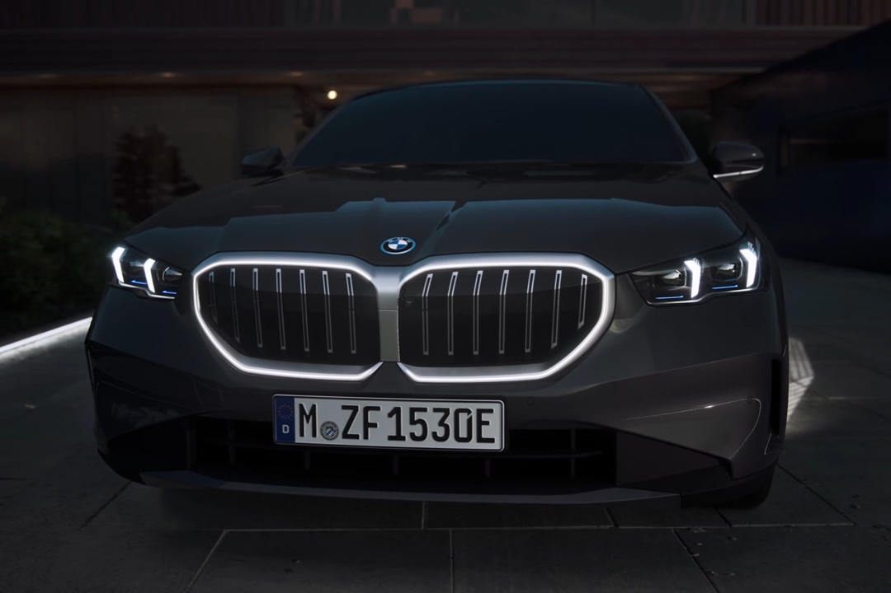
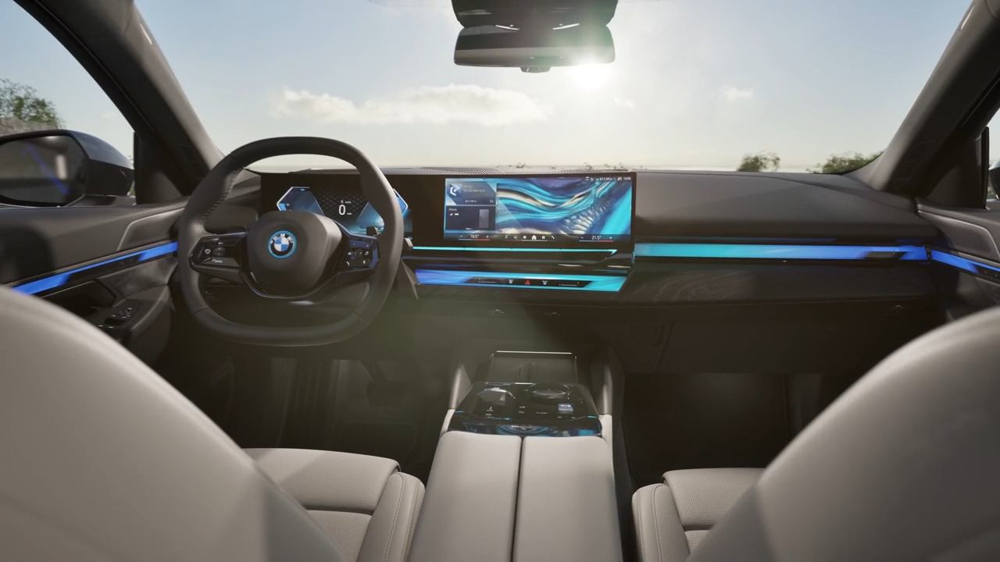
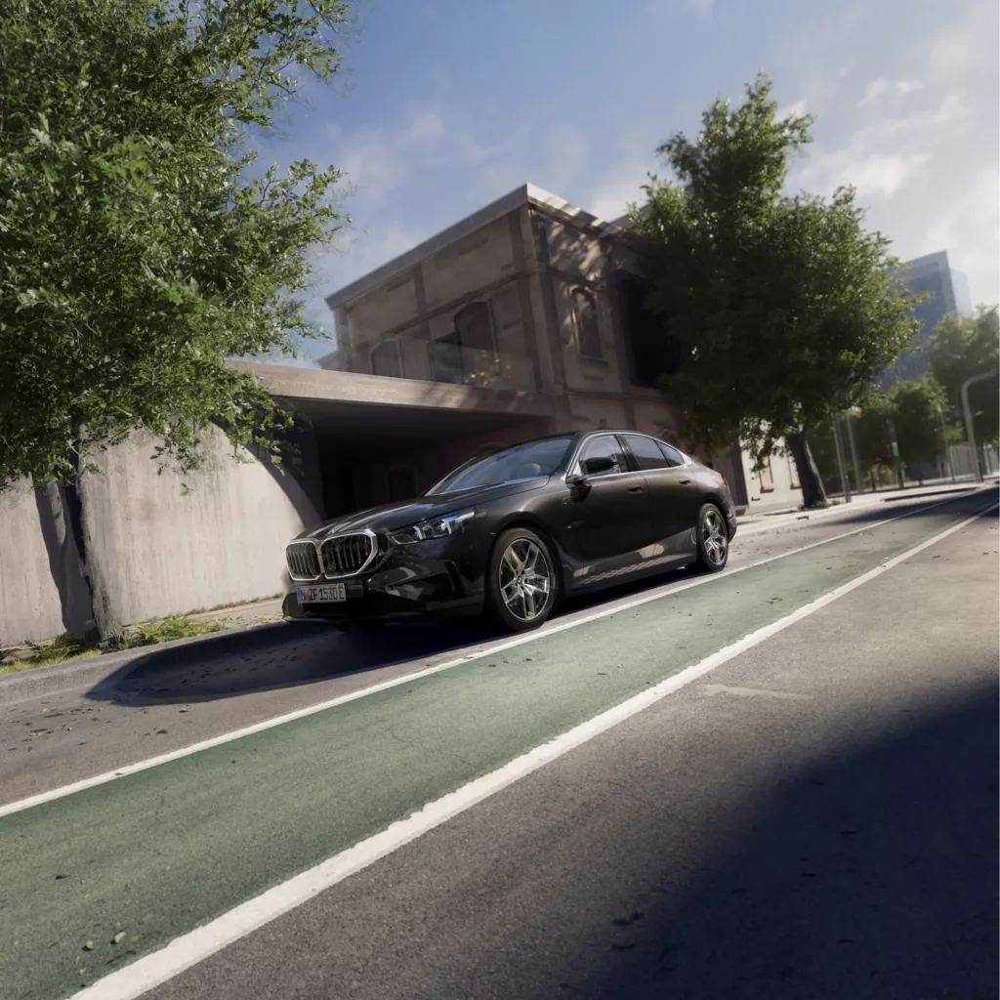
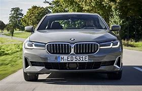

Quem fundou a famosa empresa da bmw?
.jpg)
Esse é Karl Rapp (Ehingen (Alb-Donau), 24 de setembro de 1882 — Locarno, 26 de maio de
1962) foi um empresário alemão, que, em 1913, fundou a Rapp Motorenwerke GmbH em Munique, que durante a
Primeira Guerra Mundial no campo da construção de motores aeronáuticos e aviões em parceria com a Gustav
Otto Flugmaschinenwerke do engenheiro mecânico Gustav Otto, mas que em 1916 entrou em dificuldades
financeiras vindo a se tornar, aparentemente sem envolvimento direto de Karl Rapp, na Bayerische
Flugzeug-Werke AG (BFW).
Qual foi sua primeira Bmw?
.jpg) Esse é um Dixi 3/15, criada a partir de partes de aviões caidos da segunda guerra
mundial.
Informações de motor
Esse é um Dixi 3/15, criada a partir de partes de aviões caidos da segunda guerra
mundial.
Informações de motor
Qual a bmw mais atual?
A BMW mais atual inclui a nova geração do Série 5, que chega em versões híbrida e 100% elétrica a partir de março, com a i5 M60, que tem um motor de 601 cv1. Além disso, a BMW confirmou novos modelos como o X3 e o Mini Countryman S para 20252. Essas informações refletem as últimas atualizações e lançamentos da marca.




Saiba Mais sobre o motor